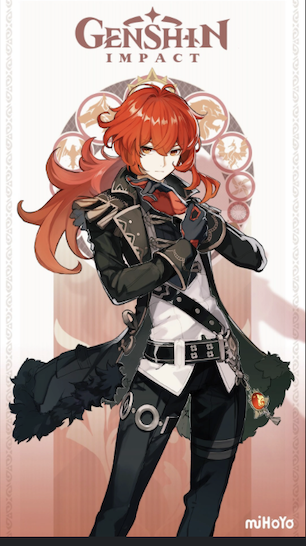

Elle est l'apparence mortelle actuelle de Foçalors, l'Archon Hydro actuel de Fontain Furina est originellement une déesse romaine des eaux souterraines et la patronne du creusement des puits. Furina est un faux l'Archon Hydro, ou c'est tout du moins ainsi qu'elle se présente au protagoniste lorsqu'il arrive à Fontaine. Grandiloquente, elle aime se mettre en scène et être au centre de l'attention. Elle a aussi un goût prononcé pour les procès et, de manière plus générale, pour tout ce qui peut la divertir. Elle aime aussi beaucoup les pâtisseries. Bien qu'elle soit considérée comme une divinité fiable et qu'elle jouisse d'une certaine popularité auprès des Fontainois. Que ce soit lors de spectacles ou de procès, elle sera toujours assise à la place qui lui est réservée, au-dessus du public. Ses réactions, qui vont du rire à la réprimande, voire à l'hystérie, attirent souvent plus l'attention que ce qui se passe sur scène. Les gens achètent des billets pour vivre de nouvelles expériences sensorielles, et à cet égard, Furina est bien plus populaire que la justice absolue que représente Neuvillette. Furina agit souvent à la manière d'une enfant gâtée ; elle peut se montrer capricieuse, imbue d'elle-même et elle ne supporte pas d'être prise en défaut. Il s'agit d'une façade qu'elle maintient en public. De plus, elle ne possède aucun pouvoir particulier et elle n'est qu'un leurre et n'est pas le véritable Archon de Fontaine. A la fin de l'histoire de Furina, Focalors , le vrai archonte s’exécute, libérant Furina de sa malédiction et lui permettant de vivre sa propre vie
